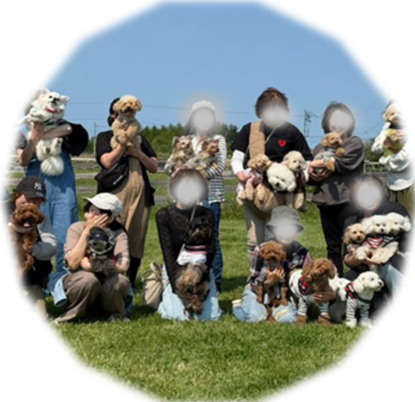
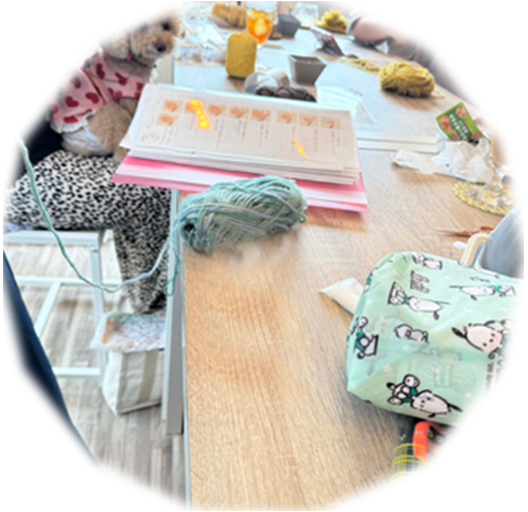
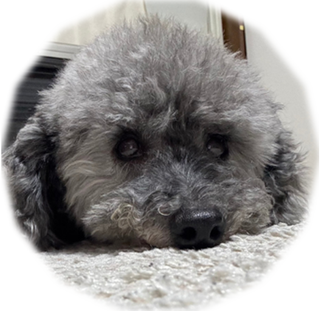

華のママ
元介護福祉士
自己紹介
介護福祉士として10年以上、働いてきました。
その経験を活かして、大好きな祖父を在宅で介護し、最期まで看取ることができたことは、私の人生の中で最も大切な経験のひとつです。
現在は、Web制作の勉強中です。HTMLやCSSを使ったコーディング、Photoshopなど、自分のペースで学びんでいます。
趣味は、かぎ針編みとフルート。
そして、毎日を彩ってくれる大切な家族、愛犬「華（はな）」と過ごす時間を大切にしています。
Love
- 愛犬の華
- フルート
- 編み物
- お菓子作り
休日
華とお出かけ
- ドッグラン
- 公園のお散歩
- 写真撮影
- お友達とドッグカフェ
普段のわたし
-

犬友達とのイベント
時々ドッグランを貸し切って遊んだり、公園でお散歩したり、季節の撮影会をして楽しんでいます。ドッグカフェにもよく行きます。
-

編み物会
趣味の編み物をきっかけに、わんこ同伴型の編み物会を定期的に開催。
ドッグカフェや自宅などで、わんちゃんと戯れつつ編み物もしています。 -

何よりも大切な時間
愛犬 華との時間はなによりも大切な時間です。甘えん坊でかわいい自慢の娘。
走ることが大好きな子なので、よくドッグランに行っていっぱい走っています。
サイトマップ